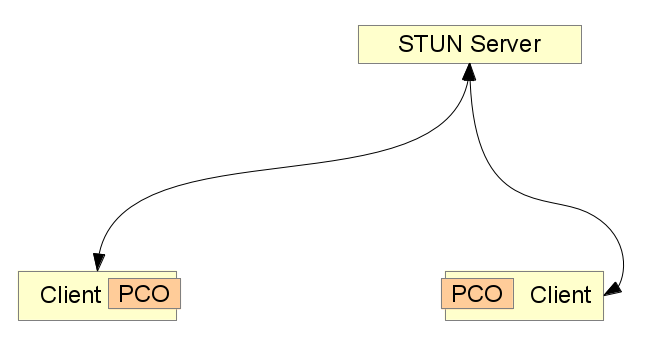

we need reliable, distributed, encrypted, direct communication - simple to use
cc-by eff.org
| z, ? | toggle help (this) |
| space, → | next slide |
| shift-space, ← | previous slide |
| d | toggle debug mode |
| ## <ret> | go to slide # |
| c, t | table of contents (vi) |
| f | toggle footer |
| r | reload slides |
| n | toggle notes |
| p | run preshow |
| P | toggle pause |
we need reliable, distributed, encrypted, direct communication - simple to use
cc-by eff.org

Initially by Global IP Solutions (GIPS) 2010

World Wide Web Consortium
Internet Engineering Task Force
Global IP Solutions
Bought by Google in 2010

<video id="example1-video" autoplay="autoplay">
<script>
navigator.webkitGetUserMedia(
{video: true, audio: false},
function(stream) {
document.getElementById('example1-video').src =
webkitURL.createObjectURL(stream);
}
);
</script>NAT Hole Punching
Media Streams
Data Channels
Video: VP8
Audio: Opus
and "independence"
Different OSs / Browsers
Different Devices / VOIP / Land Lines
Adaptive to Network Conditions / Renegotiation
Encrypted by Default
Free to choose: XHR, WS, ...
Developer implements Details


Renegotiation Possible. Developer not supposed to edit sdp, but can
Session Description Protocol
Details about Media Capabilities
v=0 o=- 3869962025294249707 2 IN IP4 127.0.0.1 s=- t=0 0 a=group:BUNDLE audio video a=msid-semantic: WMS Yhb3bAbcbJfG3I2gQ1CSKyZ1YxLbdP4pPJqd m=audio 1 RTP/SAVPF 111 103 104 0 8 107 106 105 13 126 c=IN IP4 0.0.0.0 a=rtcp:1 IN IP4 0.0.0.0 a=ice-ufrag:BEu7Lja6FjAY0e9f a=ice-pwd:j7e1RG5lkZglnryHeqB4drYn a=ice-options:google-ice a=fingerprint:sha-256 CE:D3:47:15:E8:5D:64:35:30:32:F7:14:FD:18:17:9C:E1:3A:F2:0B:0B:90:FF:26:90:21:B1:40:68:9C:EA:E7 a=extmap:1 urn:ietf:params:rtp-hdrext:ssrc-audio-level a=sendrecv a=mid:audio a=rtcp-mux a=crypto:1 AESCM128HMACSHA180 inline:gFszjZPHhEfqGehRrfnSrGtNqMlzYglKuvewCInq a=rtpmap:111 opus/48000/2 a=fmtp:111 minptime=10 a=rtpmap:103 ISAC/16000 a=rtpmap:104 ISAC/32000 a=rtpmap:0 PCMU/8000 a=rtpmap:8 PCMA/8000 a=rtpmap:107 CN/48000 a=rtpmap:106 CN/32000 a=rtpmap:105 CN/16000 a=rtpmap:13 CN/8000 a=rtpmap:126 telephone-event/8000 a=maxptime:60 a=ssrc:2710618532 cname:aqZgznSt7eFJwMlw a=ssrc:2710618532 msid:Yhb3bAbcbJfG3I2gQ1CSKyZ1YxLbdP4pPJqd Yhb3bAbcbJfG3I2gQ1CSKyZ1YxLbdP4pPJqda0 a=ssrc:2710618532 mslabel:Yhb3bAbcbJfG3I2gQ1CSKyZ1YxLbdP4pPJqd a=ssrc:2710618532 label:Yhb3bAbcbJfG3I2gQ1CSKyZ1YxLbdP4pPJqda0 m=video 1 RTP/SAVPF 100 116 117 c=IN IP4 0.0.0.0 a=rtcp:1 IN IP4 0.0.0.0 a=ice-ufrag:BEu7Lja6FjAY0e9f a=ice-pwd:j7e1RG5lkZglnryHeqB4drYn a=ice-options:google-ice a=fingerprint:sha-256 CE:D3:47:15:E8:5D:64:35:30:32:F7:14:FD:18:17:9C:E1:3A:F2:0B:0B:90:FF:26:90:21:B1:40:68:9C:EA:E7 a=extmap:2 urn:ietf:params:rtp-hdrext:toffset a=sendrecv a=mid:video a=rtcp-mux a=crypto:1 AESCM128HMACSHA180 inline:gFszjZPHhEfqGehRrfnSrGtNqMlzYglKuvewCInq a=rtpmap:100 VP8/90000 a=rtcp-fb:100 ccm fir a=rtcp-fb:100 nack a=rtcp-fb:100 goog-remb a=rtpmap:116 red/90000 a=rtpmap:117 ulpfec/90000 a=ssrc:1347190094 cname:aqZgznSt7eFJwMlw a=ssrc:1347190094 msid:Yhb3bAbcbJfG3I2gQ1CSKyZ1YxLbdP4pPJqd Yhb3bAbcbJfG3I2gQ1CSKyZ1YxLbdP4pPJqdv0 a=ssrc:1347190094 mslabel:Yhb3bAbcbJfG3I2gQ1CSKyZ1YxLbdP4pPJqd a=ssrc:1347190094 label:Yhb3bAbcbJfG3I2gQ1CSKyZ1YxLbdP4pPJqdv0
NAT: The IP4 World is not Ideal...
Session Traversal Utilities for NAT
How are you reachable from the outside world?

Interactive Connectivy Establishment
Send as many ways to reach each other as possible


Traversal Using Relays around NAT
Use a "relay" server for video data, which is not behind NAT
Solutions: Limit ICE candidates: Only TURN IP / Public IP
Participants learns IPs of peers (not only of server)
Private IP (behind NAT) might become known by others
Even if session not established
Datagram Transport Layer Security (DTLS)
TLS Transport over UDP
IETF / Used in many VOIP Infrastructures
SRTP transports Video / Audio Packets
Contains Codecs / Timestamps / Sequence Numbers
Used for Data Channels
Alternative to TCP/UDP
Comes with congestion control
SCTP over DTLS over UDP
Opera plans full support
API still changing
June 25, 2013
Currently only getUserMedia()
var onLocalStreamReady = function(localStream) {
...
};
navigator.webkitGetUserMedia(
{video: true, audio: false},
function(stream) {
console.log("Got localstream");
onLocalStreamReady(stream);
}
);var onLocalStreamReady = function(localStream) {
var pc = new webkitRTCPeerConnection(
{iceServers: [{url: "stun:93.186.193.18"}]},
{optional: [{DtlsSrtpKeyAgreement: true}]}
);
pc.addStream(localStream);
pc.onaddstream = function(event) {
console.log("Add stream");
$('#example2')[0].src =
webkitURL.createObjectURL(event.stream);
};
// continues in next code example... // ... continued from last code example
var peerId;
var server = new WebSocket('wss:palava.tv:4233');
server.onopen = function() {
server.onmessage = function(msg) {
... // react on joined_room, answer & ice_candidate
};
... // send own ice_candidates
console.log("Send message: 'join_room'");
server.send(JSON.stringify({
event: 'join_room',
room_id: 'berlinjs'
}));
};
};server.onmessage = function(msg) {
msg = JSON.parse(msg.data);
console.log("Got message: " + msg.event);
if(msg.event === 'joined_room') {
peerId = msg.peer_ids[0];
pc.createOffer(function(sdp) {
console.log("Created offer for peer" + peerId);
pc.setLocalDescription(sdp);
server.send(JSON.stringify({
event: 'send_to_peer',
peer_id: peerId,
data: {
event: 'offer',
sdp: sdp
}
}));
});
...
}
};server.onmessage = function(msg) {
msg = JSON.parse(msg.data);
console.log("Got message: " + msg.event);
...
if(msg.event === 'answer') {
pc.setRemoteDescription(
new RTCSessionDescription(msg.sdp)
);
}
...
};server.onmessage = function(msg) {
msg = JSON.parse(msg.data);
console.log("Got message: " + msg.event);
...
if(msg.event === 'ice_candidate') {
var candidate = new RTCIceCandidate({candidate: msg.candidate...});
pc.addIceCandidate(candidate);
}
};
pc.onicecandidate = function(event) {
if(event.candidate) {
console.log("Send ice candidate");
server.send(JSON.stringify({
event: 'send_to_peer',
peer_id: peerId,
data: {event:'ice_candidate', candidate:event.candidate.candidate...}
}));
}
};2 Examples
Firefox and Chrome don't want to talk with each other
Hardcode Crypto Headers
sdpHandler = (sd) =>
if window.mozRTCPeerConnection
sd.sdp += (
'a=crypto:1 AES_CM_128_HMAC_SHA1_80 inline:' +
'BAADBAADBAADBAADBAADBAADBAADBAADBAADBAAD\r\n'
)
# ...When you mute one media stream in Chrome,
it will mute all of the other media streams!
Manage all video "muted" states yourself!
When a stream gets (un)muted, always mute all streams
Then manually turn on all streams, where the mute state is "unmuted"